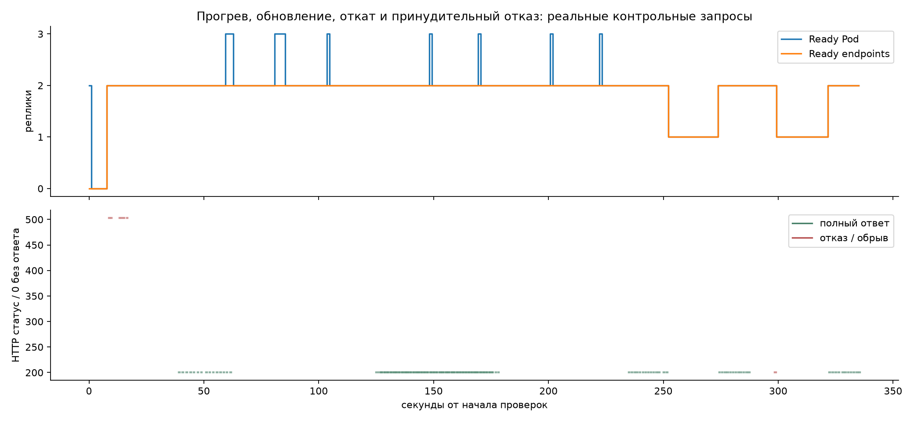
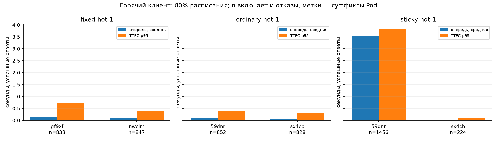
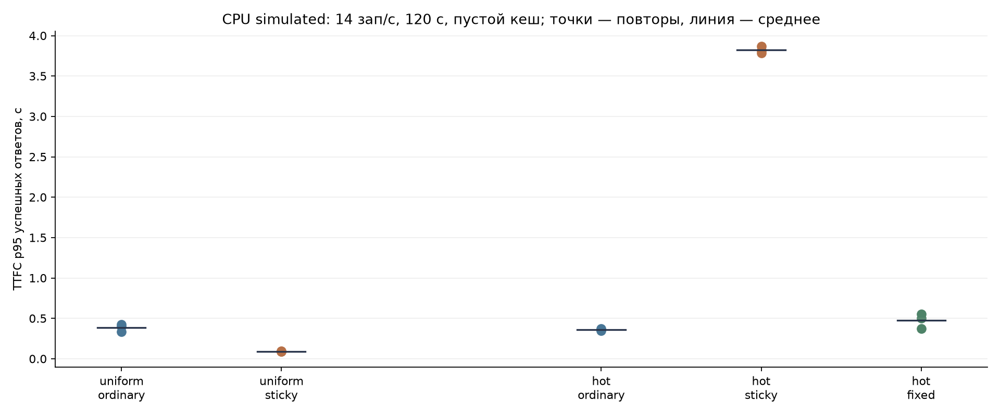
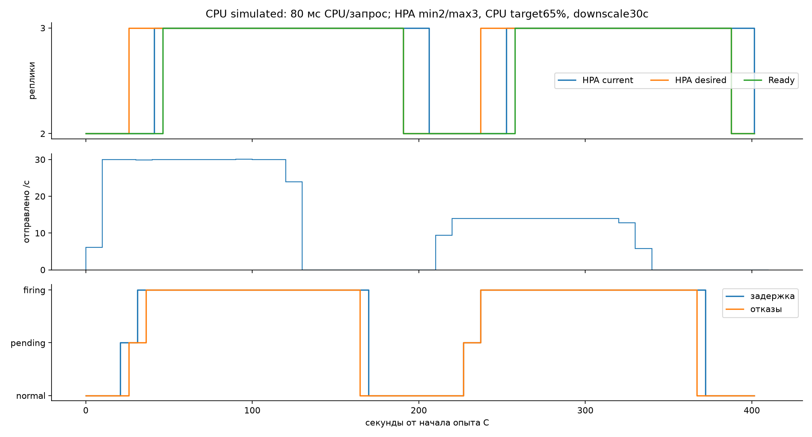

Задание и устройство стенда
Разместить API в Kubernetes, воспроизвести ошибки прогрева и маршрутизации, проверить обновление и масштабирование под настоящим HTTP-трафиком. Вычислитель — явно обозначенный backend_mode=simulated; он выполняет настоящую CPU-работу и отдаёт искусственные части ответа. Качество языковой модели здесь не измеряется.
Pod — запущенная копия контейнера сервиса. Deployment поддерживает нужное число таких копий, а Service даёт общий сетевой адрес и направляет запросы на готовые копии. Helm читает папку шаблонов — чарт — и подставляет значения из values.yaml. Поток: четыре клиентских Pod → Service → одна из реплик API → ограниченная очередь → CPU-имитатор → поток JSONL. История диалога приходит в messages каждого запроса. Между репликами нет общего изменяемого состояния диалога.
Файлы, версии и ограничения
src/cluster_api.py содержит имитатор, очередь и метрики. service.py --backend-mode simulated включает этот режим; прежний режим загрузки модели сохранён. infra/helm/planner/ описывает Deployment, Service, ConfigMap, проверки готовности и HPA. infra/monitoring/ — Prometheus, алерты и экспорт Grafana. Prometheus регулярно забирает числовые показатели каждой копии; Grafana рисует их на панелях. scripts/hw11/ — запуск, клиенты, опыты, отчёт и удаление. Сырые запросы — results/requests.csv и JSONL в results/hw11/.
Образ не содержит весов. Неизменяемые ConfigMap версий A и B сохраняются одновременно, чтобы откат и перезапуск старого Pod не зависели от судьбы нового выпуска. Файл имитатора монтируется из ConfigMap и перед загрузкой проверяется SHA-256. Ответы содержат реальное имя Pod и загруженную версию. Версии среды — versions.json; файлы и размеры — image-ids.json. Docker: 8 CPU и около 7.65 GiB RAM; свободное место до опыта — около 139 GiB. На реплику: CPU request 100m, limit 1; RAM request 64 MiB, limit 192 MiB. Одно одновременное вычисление, очередь максимум 32, ожидание максимум 8 с.
Опыт A: прогрев
Гипотеза: если считать запуск HTTP-процесса готовностью модели, новый Pod получит рабочий запрос во время прогрева. Исходный дефект включён отдельным warmup-broken.yaml. Исправление: startup ждёт загрузку и прогрев, readiness исключает ещё не готовые и выводимые реплики, liveness проверяет только жизнь процесса. Весь прогрев — 20 с; запас startup — 90 проверок по 1 с. Команды, Ready и EndpointSlice сохранены в опыте lifecycle.
| Фаза | Попыток | HTTP200 | HTTP503 |
|---|
| Исходная проверка готовности | 8 | 0 | 8 |
| После исправления | 15 | 15 | 0 |

Обновление, откат и отказ процесса
Для штатного rollout разрешены 2 одновременных потока на Pod, чтобы длинный ответ и короткий контрольный запрос помещались без перегрузки; сравнения B и CPU-опыты C используют 1. Перед обновлением A→B запускается поток из 100 частей по 500 мс: он длится около 50 с и пересекает обновление. Новые Pod прогреваются 20 с; maxUnavailable=0, maxSurge=1. При выводе старой реплики readiness закрывается первой, затем 3 с отведены на распространение EndpointSlice. Успевшие поступить запросы принимаются; SIGTERM закрывает приём соединений и даёт активным ответам завершиться в пределах grace period 40 с.
Отдельная B намеренно не становится готовой. Проверяется исключение из рабочего трафика и возврат к A по реальным ответам. Первый внутренний сигнал процессу с номером 1 не оборвал поток, и контрольная проверка это обнаружила. Этот неуспешный запуск сохранён отдельно. В итоговом аварийном опыте процесс принудительно завершается через containerd из родительского окружения. SIGKILL проведён отдельно от штатного обновления: клиент должен сохранить оборванную попытку, после перезапуска — получить полный ответ. Числа успешных и неудачных проверок берутся из журналов, не из текста конфигурации.
| Штатное обновление | Значение |
|---|
| Попыток | 41 |
| HTTP5xx | 0 |
| Незавершённых потоков | 0 |
| Длинный поток: Pod | planner-7656bc9fc-twpbr |
| Частей | 100 |
| Полная длительность, с | 50.475 |
| Остаток ответа после начала вывода, с | 6.076 |
Опыт B: одинаковые сравнения
Обычный Service и ClientIP направляют запросы в те же две реплики. Четыре клиентских Pod имеют разные IP; HTTP keep-alive отключён, каждый запрос создаёт соединение. kube-proxy использует iptables; адрес клиента подтверждён журналом сервиса. Сначала трафик равномерный, затем 80% расписания принадлежит одному клиенту. Для каждой комбинации — три фазы по 120 с, 14 зап/с, по 1680 плановых попыток. В каждом ответе 4 части с задержкой 25 мс между ними.
Локальный кеш префиксов ограничен 8 записями. Перед каждой фазой кеш обеих реплик очищается; модель уже прогрета. Попадание стоит 5 мс CPU, промах — 80 мс CPU. Состояние привязки Service сохраняется с timeout 10800 с. Это конкретная модель нагрузки; она не измеряет производительность настоящего кеша внимания.
| Прогон | Попыток | Полных | Отказов/других | TTFC p50, с | TTFC p95, с | Полный p95, с | Отправка p95 / max, с |
|---|
| fixed-hot-1 | 1680 | 1680 | 0 | 0.103 | 0.552 | 0.633 | 0.004 / 0.157 |
| fixed-hot-2 | 1680 | 1680 | 0 | 0.098 | 0.370 | 0.452 | 0.005 / 0.081 |
| fixed-hot-3 | 1680 | 1680 | 0 | 0.124 | 0.503 | 0.588 | 0.006 / 0.616 |
| ordinary-hot-1 | 1680 | 1680 | 0 | 0.089 | 0.357 | 0.440 | 0.004 / 0.240 |
| ordinary-hot-2 | 1680 | 1680 | 0 | 0.106 | 0.371 | 0.455 | 0.004 / 0.208 |
| ordinary-hot-3 | 1680 | 1680 | 0 | 0.096 | 0.346 | 0.431 | 0.004 / 0.097 |
| ordinary-uniform-1 | 1680 | 1680 | 0 | 0.111 | 0.396 | 0.479 | 0.004 / 0.256 |
| ordinary-uniform-2 | 1680 | 1680 | 0 | 0.098 | 0.337 | 0.419 | 0.004 / 0.011 |
| ordinary-uniform-3 | 1680 | 1680 | 0 | 0.099 | 0.425 | 0.506 | 0.004 / 0.106 |
| sticky-hot-1 | 1680 | 1278 | 402 | 3.709 | 3.816 | 3.902 | 0.005 / 0.123 |
| sticky-hot-2 | 1680 | 1281 | 399 | 3.700 | 3.783 | 3.866 | 0.005 / 0.210 |
| sticky-hot-3 | 1680 | 1259 | 421 | 3.708 | 3.868 | 3.954 | 0.006 / 2.591 |
| sticky-uniform-1 | 1680 | 1680 | 0 | 0.073 | 0.088 | 0.170 | 0.004 / 0.008 |
| sticky-uniform-2 | 1680 | 1680 | 0 | 0.074 | 0.099 | 0.188 | 0.005 / 0.259 |
| sticky-uniform-3 | 1680 | 1680 | 0 | 0.073 | 0.088 | 0.171 | 0.004 / 0.119 |
Горячая реплика и исправление
В основной равномерной серии ClientIP распределил четыре клиента как 2:2; все три повтора завершились без отказов. Ожидаемого перекоса здесь не возникло, что подтверждено трассой. В предварительной серии иные IP попали как 3:1 и дали отказы. Очередь принадлежит конкретной реплике. Привязка может удерживать популярного клиента на занятом Pod, когда другой остаётся свободнее. Исправление в этом стенде — снять ClientIP: отдельный Service planner-fixed использует sessionAffinity: None. Тот же горячий сценарий повторяется трижды. Цена решения — возможный пересчёт локального префикса; она допустима только пока экономия ожидания больше этой цены. Три заключительные фазы первого запуска имели скачки wall-minus-monotonic на 69, 32 и 548 с. Генератор с расписанием по wall-clock после паузы отправлял запросы залпом. Они сохранены в invalid-fixed-wall-clock, исключены из сопоставимого сравнения и повторены с той же версией backend V2, пустым кешем и расписанием по монотонным часам. Новые Pod восстановили ту же версию; изменились только имена процессов. Эта помеха обнаружена по исходным временным меткам, а не по величине ошибок. Предварительные данные, включая неожиданный перекос равномерного трафика, сохранены в pilot-balance-v1 и не смешаны с основными сравнениями.


Опыт C: CPU и 2→3→2
Автоматический регулятор количества реплик — Horizontal Pod Autoscaler, HPA — добавляет реплики по средней загрузке CPU относительно requests=100m. Минимум 2, максимум 3; цель 65%; окно уменьшения — 30 с. Resource metrics API проверен. Для этой отдельной вычислительной нагрузки и попадание, и промах стоят 80 мс CPU. Во время основного сравнения B HPA выключен: число реплик там постоянно.
В опыте C подаются 30 зап/с равномерно, затем после возврата к минимуму — 14 зап/с с горячим клиентом. Сохранены фактические моменты создания и готовности Pod, условия HPA, CPU и возврат к двум репликам. Добавление Pod не снимает старую привязку клиентских IP; новый получатель может остаться без запросов.

Что именно измерено
Клиент использует монотонные часы: TTFC — от отправки до первой содержательной части; полная задержка — до окончания потока; интервалы между частями считаются по N−1 промежуткам. Это части искусственного ответа, поэтому TTFT, TPOT и tokens/s не заявляются. Отдельно сохранены запланированные, отправленные, завершённые, отклонённые, оборванные и просроченные попытки. Повторы клиента не выполняются.
Histogram использует границы 0.01, 0.025, 0.05, 0.1, 0.2, 0.4, 0.8, 1.2, 2, 3, 5, 8, 15, 30, 60 с. Для классической гистограммы: histogram_quantile(0.95, sum by(le,pod) (rate(planner_ttfc_seconds_bucket[30s]))). Метка le сохранена. Для точного сравнения с клиентом есть отдельная когорта на новых Pod, без посторонних генераций: одинаковый набор и числа. Серверная гистограмма интерполирует внутри корзин, а клиент дополнительно видит сеть.
На дашборде: TTFC, полная задержка, running/waiting по Pod, завершения в секунду, отказы, CPU процесса, RSS процесса и прогретые реплики. Идентификаторы запросов и диалогов присутствуют в журналах, в метки метрик не попадают.
| Одни и те же ответы | Клиент | Prometheus |
|---|
| Количество | 80 | 80 |
| TTFC p95, с | 0.111 | 0.150 |
Два алерта
Задержка: p95 TTFC >0.6 с при минимум 20 первых частях за 30 с. Отказы: доля rejected/unready/interrupted >5% при минимум 20 исходах за 30 с. Оба условия должны держаться 10 с. Реальные состояния pending/firing/inactive сохранены вместе с HPA; после окончания нагрузки проверяется возврат в норму. Готовые правила — infra/monitoring/alerts.yaml.
Собственные проверки
| Проверка | Действие |
|---|
| 1. Прогрев | Реальные 503 на исходном дефекте, затем отсутствие нового Pod в Ready endpoints и успешный трафик после исправления |
| 2. Обновление и откат | Длинный поток пересекает обновление; неготовая B исключена; ответ после отката сообщает A |
| 3. Замена Pod | Контрольная сумма артефакта и переданная история диалога сохраняют смысл после пересоздания |
| 4. Отказы и обрыв | Все 90 попыток перегрузки учтены; принудительно оборванный поток сохранён; сервис восстановился |
| 5. Изоляция | Два разных контрольных диалога получают только свои строки и разные хеши истории |
Итог фактического запуска: 5 проверок прошли. Прежние 20 быстрых проверок также сохранены. Журналы содержат HTTP-ответы и границы процессов; чтение готового файла само по себе не считается интеграционной проверкой.
Ревью: закреплять ли диалог навсегда
При указанных условиях новый запрос направляю в B: её пересчёт 0.8 с короче трёх секунд ожидания у A. Это решение предполагает доступную память, совместимую версию модели и отсутствие скрытой очереди у B. Для окончательного выбора нужны распределения стоимости обработки контекста, длины ответа, цены передачи состояния и ошибок оценки очереди, а также очередь и доля отказов каждой реплики. Одной средней загрузки недостаточно.
Перед допуском проверяю прогрев, свободную ёмкость, предел очереди и срок ожидания. Если обе реплики заняты сверх бюджета, возвращаю управляемый отказ; бесконечную очередь не создаю. История диалога хранится снаружи Pod либо передаётся клиентом полностью. После потери A новый запрос можно восстановить на B с пересчётом префикса. Уже начатый поток остаётся у выбранной реплики до завершения; перенос посреди ответа требует отдельного протокола восстановления. При аварии фиксирую обрыв, а повтор учитываю новой попыткой с защитой от повторного выполнения действий.
В лекции 11 примерно на 9:45 разбирается кейс Anthropic. В первичном разборе от 17 сентября 2025 года неверный выбор пула контекста ухудшал ответы, а липкая маршрутизация продлевала влияние на последующие сообщения. Поэтому на ревью проверяю не только задержку, но и загруженную конфигурацию и многоходовые контрольные диалоги. Наш имитатор подтверждает управление HTTP и состоянием; безопасность реального KV-кеша и качество модели требуют отдельного опыта.
Запуск, удаление и границы результата
Команды: python3 scripts/hw11/install_tools.py, затем добавить notes/work/hw11/tools в PATH и выполнить scripts/hw11/setup.sh. Рабочий контекст всегда берётся из notes/work/hw11/kubeconfig. Метрики: kubectl --kubeconfig notes/work/hw11/kubeconfig -n mlops-hw11 port-forward svc/prometheus 19090:9090; Grafana аналогично 13000:3000. Сравнения: make k8s-balance; проверки: make k8s-test; масштабирование: make k8s-autoscale. Новый повтор сохраняется в новый каталог; существующие доказательства не перезаписывают.
Удаление собственного стенда: scripts/hw11/cleanup.sh. Размер и лимиты — storage.json. Prometheus: retention 2 ч и 128 MB, том до 256 MiB; Grafana до 64 MiB; временные файлы четырёх клиентов до 64 MiB на Pod. Образы, kubeconfig, лекция, среда, видео и образец голоса в Git не входят.
Ограничения: один локальный узел ARM64, искусственные части вместо токенов, ограниченная синтетическая CPU-модель и три повтора. Эти числа не доказывают ускорение настоящего inference engine, распределённую доступность при потере узла или изоляцию памяти GPU.
Итог
Проверенные результаты собраны в одном проекте: реальный Kubernetes и HTTP, управляемый CPU-имитатор, сохранённые отказы и измерения. Все обязательные проверки доказательств прошли.
Спасибо за внимание.